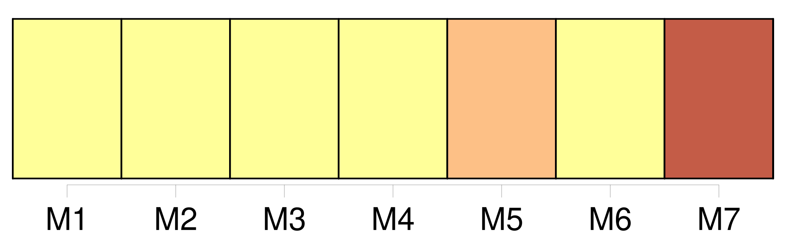

Longueur nb maillons : 10 mentions |
 |
Miller porte le coup de grâce L'apport de Jennings, entré dans [le Cinq] , et de son sens stratégique, y sont certainement pour beaucoup. [6 phrases] Pour le reste, force est de reconnaître que [le SLUC] a au moins fait entrevoir de belles promesses. Face à une formation gravelinoise dont on connaît la force de frappe, [les Nancéiens] ont fait preuve d'un cœur gros comme ça. Sous les panneaux, où [ils] rivalisèrent avec les intérieurs nordistes ( 40-40 aux rebonds ). [5 phrases]
Rowe et Georget, encore lui, avaient la main brûlante et [le SLUC] concédait alors [son] plus gros handicap ( 50-42, 24 '). On se disait que [Nancy] n'avait fait que retarder l'échéance et que Zianveni et les autres allaient progressivement décrocher. [1 phrases] Après que [le SLUC] ait signé un 8-0, Autry, très percutant, remettait les pendules à l'heure ( 61-61, 34 '). Si bien qu'à trois minutes du gong, [les Lorrains] collaient toujours aux basques de la bande à l'impressionnant Lear ( 66-65 ). |
|
Il est possible de télécharger la ressource sur la page Ortolang |
Si vous avez des questions ou vous voyez des erreurs, merci d'envoyer un mail à silvia.federzoni89@gmail.com |